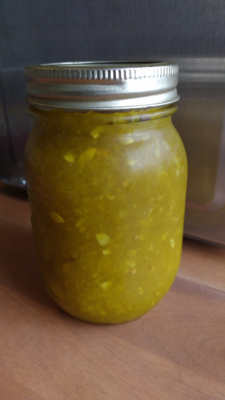

Relish maison
Ingrédients
-
20 t de concombre hachés

-
8 oignons
-
1/2 t gros sel
-
8 t de sucre
-
3 t vinaigre blanc
-
2 1/2 c. à thé de curcuma
-
1/2 c. à thé de clou de girofle moulu
-
1 c. à soupe de graines de moutarde
Instructions
Au robot mélangeur, hacher les concombres et les oignons. Mettre dans un gros chaudron.
- 20 t de concombre hachés
- 8 oignons
Ajouter 1/2 t. de gros sel. Faire tremper toute la nuit.
Jeter toute l'eau qui est ressortie.
Ajouter le sucre, le vinaigre et les épices.
- 8 t de sucre
- 3 t de vinaigre blanc
- 2 1/2 c. à thé de curcuma
- 1/2 c. à thé de clou de girofle moulu
- 1 c. à soupe de graines de moutarde
Porter à ébullition et laisser mijoter 5 minutes.
Mettre en conserve dans des pots Mason lorsque c'est encore chaud.